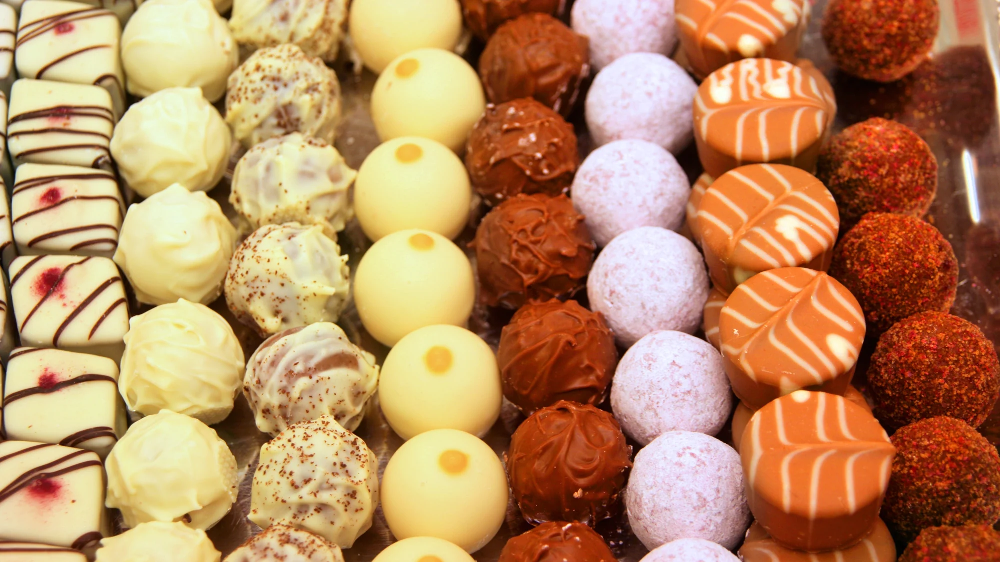
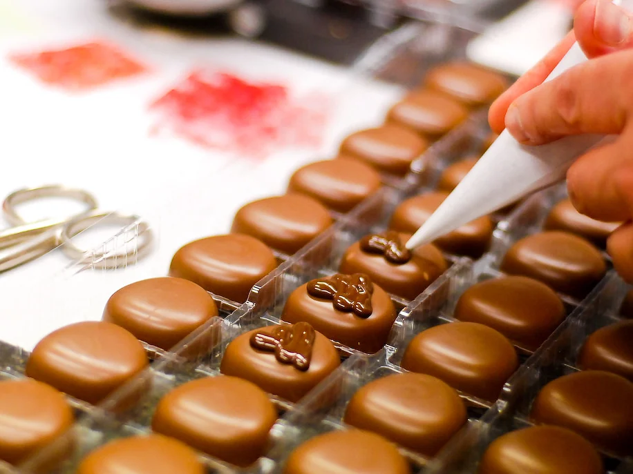
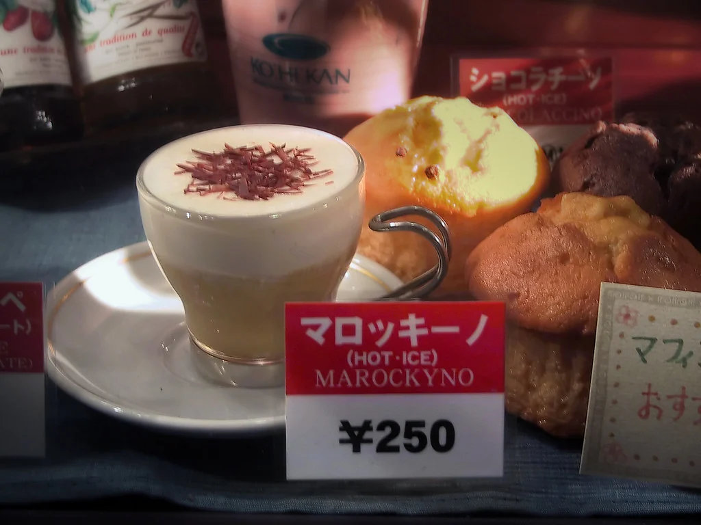
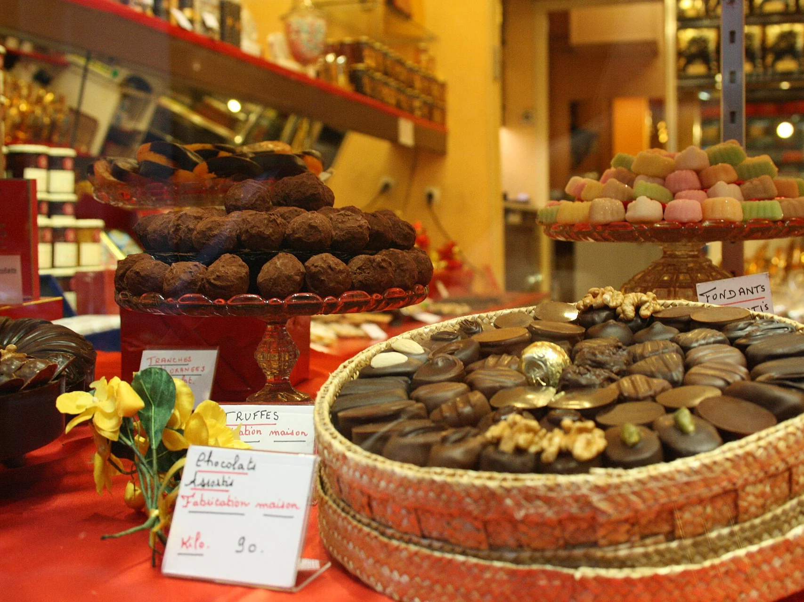

Photos d'illustration — elles ne montrent pas Chocolats du Coeur. Envoyez-moi vos propres photos et je les remplace.
Le bistrot
Notre chocolaterie
Chocolats du Coeur est la chocolaterie artisanale du Tricentenaire. Pralines, tablettes et fruits secs sont fabriqués à la main, avec des produits issus du commerce équitable. Nous tenons aussi un bar à Walferdange.

En images
En images


Nous trouver
Nous trouver
- Appeler
- +352 26 33 07 71
- info@chocolatsducoeur.lu
- Adresse
- 14, Z.A.C. Klengbousbierg, L-7795 Bissen; bar : 50, route de Diekirch, L-7220 Walferdange